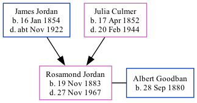

Rosamond Julia Goodban (née Jordan) 1883 - 1967
[ Home ] | [ Calendar ] | [ Surnames Index ] | [ Family History ]The daughter of James Jordan (a horse keeper) and Julia Culmer, Rosamond Jordan, the second cousin twice-removed on the mother's side of <a href="I1.html">Nigel Horne</a>, was born in Faversham, Kent, England on Nov 19, 1883<span class="citation">1,2,3</span> and baptized there on Dec 14, 1883. She married Albert Goodban there, <i>c.</i> Nov 1905<span class="citation">4</span>.</p><p>Throughout her life, she lived at 2 Mill Place in Faversham on Apr 5, 1891<span class="citation">5</span>; and at 3 Guildcount Lane, Sandwich, Kent, England on Sep 29, 1939<span class="citation">1</span>. <p>She died on Nov 27, 1967 in Sittingbourne, Kent<span class="citation">3</span>.
Parents
- James was born on Jan 16, 1854
- Julia was born on Apr 17, 1852
Citations
- 1939 Register - Findmypast (was the wife of the head of the household)
- England & Wales births 1837-2006 - Findmypast
- England & Wales deaths 1837-2007 - Findmypast
- England & Wales Marriages 1837-2005 - Findmypast
- 1891 England, Wales & Scotland Census - Findmypast (was age 7 and the daughter of the head of the household)
Media
1891 England, Wales & Scotland Census - GBC/1891/0005793049
England & Wales births 1837-2006 - BMD/B/1883/4/AZ/000309/161
England Births & Baptisms 1538-1975 - R_885853345
England & Wales marriages 1837-2005 - BMD/M/1905/4/AZ/000216/211
1939 Register - TNA/R39/1780/1780D/015/25
England & Wales deaths 1837-2007 - BMD/D/1967/4/AZ/000386/069
Family Tree
Generated by Ged2Site. Last updated on Jul 20, 2025